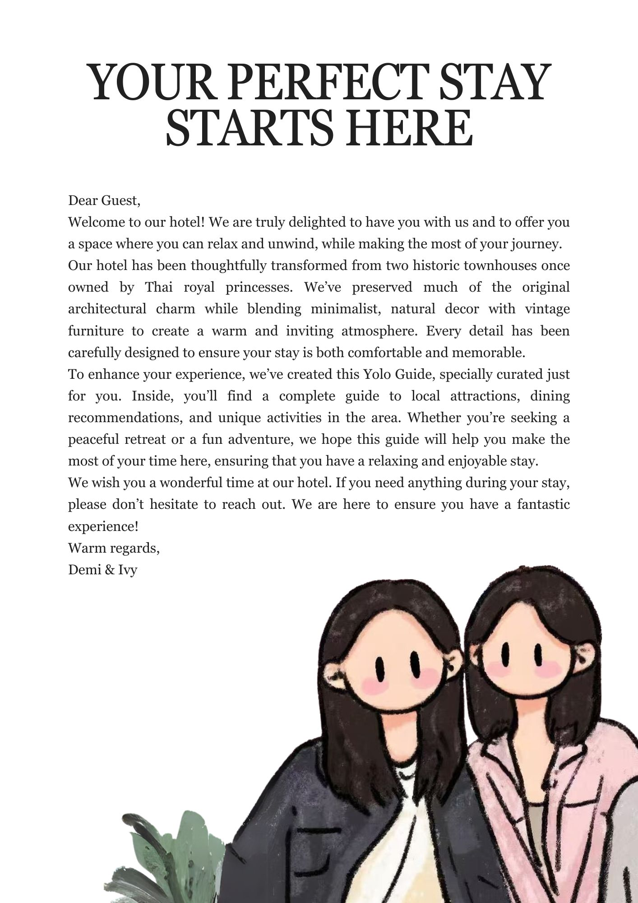

Warm Townhouse Calm
Old-house proportions, wood, soft lighting, and private baths create a gentle pause between Bangkok days.
The house / Sukhumvit 15
Two old Bangkok townhouses. Rooms with their own personality. A cafe downstairs, and a warm welcome when you get here.
A house with character
The character is in the details: timber and concrete, woven lights, Thai cushions by the window, and a sleeping loft above an open lounge. Each room has its own arrangement, from a garden-facing patio to a bath beside the bed.
Downstairs, the cafe brings the house together. Beyond the door is Sukhumvit 15, with local food, canal boats, and the rest of Bangkok ready whenever you are.
 A moment with the YOLO team.
A moment with the YOLO team.
Around the house
Say hello when you come downstairs. Ask us about a room, somewhere to eat, or getting around Bangkok. We're happy to help you settle in.
What Makes YOLO
Old-house proportions, wood, soft lighting, and private baths create a gentle pause between Bangkok days.
Start the morning slowly, catch up on plans, or settle into the lobby before heading back into Sukhumvit.
Close to Terminal 21, local cafes, water taxi routes, shopping, food, and useful city connections.
Ask for arrival tips, food ideas, room recommendations, or anything that makes your stay smoother.

You Only Live Once
For some guests, YOLO is a quiet base before a full Bangkok itinerary. For others, it is the favorite little pause of the trip: a bath, a coffee, soft light in the room, and a night of actual rest.
Explore Rooms